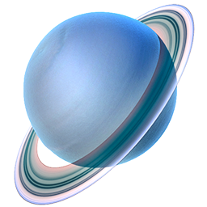

Urano |
 |
|
Urano es un mundo fascinante y extraño. A menudo se le clasifica junto con Neptuno como un gigante de hielo, ya que, a diferencia de Júpiter y Saturno, está compuesto principalmente por elementos más pesados que el hidrógeno y el helio, como agua, metano y amoníaco. Su característica más insólita es su rotación: el planeta gira prácticamente de lado. Tipo de cuerpo: Gigante de hielo. Edad estimada: 4.600 millones de años. Distancia media al Sol: 2.871 millones de kilómetros (19,2 Unidades Astronómicas). La luz solar tarda unas 2 horas y 40 minutos en llegar. Diámetro: 50.724 kilómetros (unas 4 veces el de la Tierra). Masa: 14,5 veces la masa de la Tierra. Temperatura mínima: -224 °C (es el planeta con la atmósfera más fría del sistema solar). Duración de un año: Tarda 84 años terrestres en completar una órbita. Satélites: Tiene 28 lunas confirmadas, nombradas en honor a personajes de las obras de William Shakespeare y Alexander Pope (como Titania, Oberón y Ariel). |